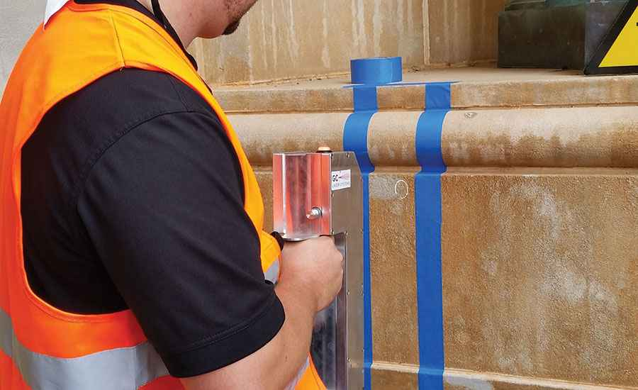

En el mundo de la tecnología láser, su utilización no se limita solamente a la medicina o la industria. También es una herramienta efectiva cuando se trata de limpiezas. La limpieza con láser ofrece resultados precisos y eficientes, tanto en el ámbito estético como en otras áreas de aplicación.
Uno de los usos más comunes de la limpieza con láser es en los tratamientos de belleza. La limpieza de cutis con láser se ha convertido en una técnica popular para mejorar la apariencia de la piel. Este procedimiento consiste en la aplicación de un láser de alta intensidad sobre la piel del rostro, eliminando con precisión las impurezas, células muertas y exceso de grasa.
Además de la limpieza facial, el láser también se utiliza en la limpieza de otros objetos y superficies. Por ejemplo, en la limpieza de metales, el láser es una herramienta altamente eficiente para eliminar óxido, pintura o residuos. El láser se dirige de manera precisa a las áreas específicas a tratar, sin dañar el material circundante.
La depilación láser es otro tratamiento estético ampliamente conocido y utilizado. Aunque no se trata propiamente de una limpieza, es un proceso que utiliza la energía láser para eliminar el vello no deseado de manera permanente. Es importante seguir los consejos de los profesionales para obtener los mejores resultados y evitar efectos secundarios.

Pero el láser no solo se utiliza en el ámbito estético. También tiene aplicaciones en la limpieza del hogar y el mantenimiento de diferentes objetos. Por ejemplo, en la limpieza de lentes intraoculares, el láser se utiliza para eliminar las impurezas y recuperar la transparencia de la lente. Es un procedimiento preciso y seguro, realizado por profesionales especializados.
Es importante tener en cuenta que el láser puede ser peligroso si no se utiliza correctamente. El contacto directo con el láser puede causar quemaduras graves en la piel y en los ojos. Si se produce una quemadura con láser, es fundamental buscar atención médica de inmediato y seguir las indicaciones de un profesional.
Además de los usos estéticos y de limpieza, el láser también se utiliza en otros campos. Por ejemplo, se ha desarrollado un nuevo sistema de desoxidado por láser para motocicletas. Este método permite eliminar el óxido y la pintura de manera eficiente y sin dañar el metal. En resumen, la limpieza con láser ofrece numerosos beneficios y aplicaciones en diferentes áreas. Desde la limpieza facial y depilación, hasta el tratamiento de superficies metálicas y desoxidado de motocicletas, el láser se ha convertido en una herramienta versátil y efectiva. Sin embargo, es importante seguir siempre las indicaciones de los profesionales y tener en cuenta las precauciones necesarias para garantizar un uso seguro y eficiente del láser.